France
Dr. Christopher N. Lawrence
Middle Georgia State University
POLS 2301: Comparative Politics
Geography
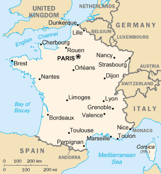Most of the territory and people of the modern French Republic (la République française) is located in western Europe.
The mainland of France, along with the island of Corsica, is usually referred to as metropolitan France or, more colloquially, “The Hexagon” (l'Hexagone), after its shape.
Early History
Like most of Britain, the dominant group in France before the Romans were the Celts. Unlike in Britain, however, except in the northwestern province of Brittany, little Celtic influence remains today.
Most of modern France, known as Gaul, was under Roman rule for around five centuries, much longer than the Romans were in Britain. The French Celts were effectively “Romanized” by their rulers.
The Roman language—both the written, classical Latin, and its unwritten “street language” vulgar Latin—had a lasting influence on France, shaping the precursor languages to modern French.
Charlemagne and West Francia
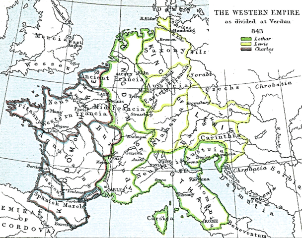After the fall of Rome, the Germanic Franks (for whom France is named) conquered most of modern France and placed it under their rule. Eventually most of western Europe was under one ruler, with Charlemagne crowned Holy Roman Emperor.
Eventually the western third of Charlemagne's kingdom, known as West Francia at the time, was under the rule of Charles the Bald. However, like in Germany, eventually the land was fragmented between various rulers of varying loyalty to the nominal king.
The Rise of Absolutism
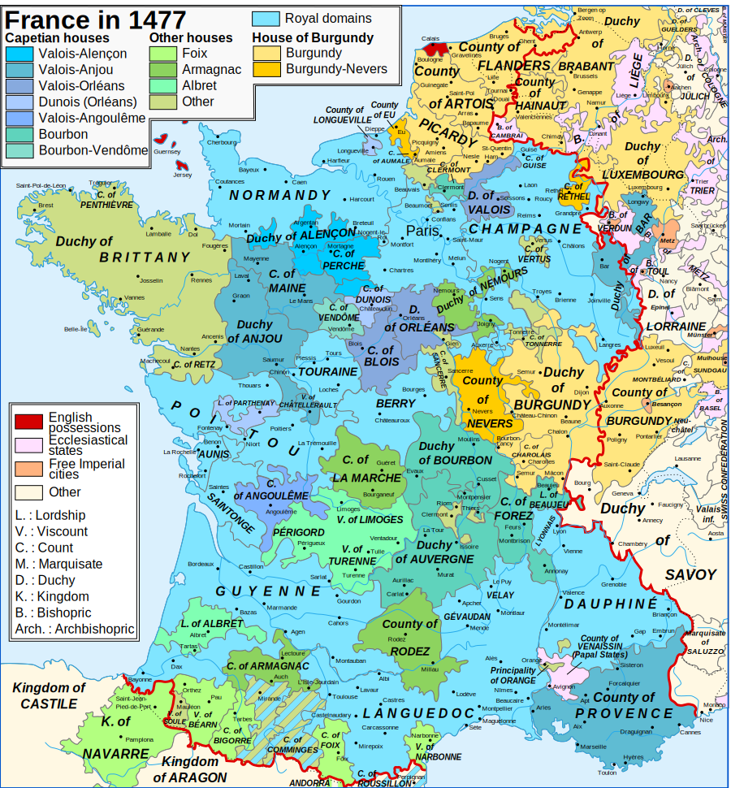The Kings of France over the centuries tried to extend full control from their power base in the Île de France.
They were able to bring the nobles to heel; unlike in England, they did not have to compromise much, undermining the Estates-General and centralizing power in the royal court and bureaucracy.
Although there was an uprising of nobles around the time of the English Civil War, known as the Fronde, it failed and royal power was strengthened. Feudalism in France gave way to absolutism.
« L'état, c'est moi »
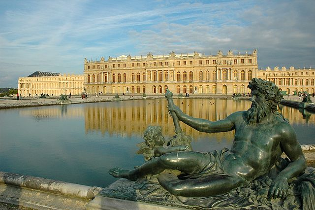Arguably the height of the ancien régime was under the rule of Louis XIV, the “Sun King.” He began the construction of the famous Palace of Versailles, and imposed greater religious and political uniformity on his subjects.
Under his successor, and great-grandson, Louis XV, royal power continued to remain strong. Unlike the Sun King, Louis XV was deeply unpopular with most of his people, particularly after losing Canada to the British.
Prelude to Revolution
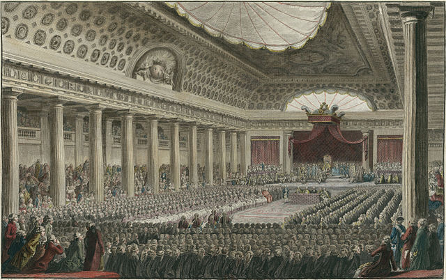Although both Louis XV and his grandson Louis XVI implemented some reforms in line with the ideas of the French Enlightenment, their changes did not go far enough to please the radicals.
A need to reform the tax system in the wake of a second war against Britain—the American Revolution—led Louis XVI to convene the Estates-General for the first time in over 170 years.
1789: The French Revolution
The First Estate (clergy) and Second Estate (nobles) were joined by the commoners' Third Estate, who soon demanded that all three estates should constitute a single National Assembly, meeting as a single body. Louis XVI soon bowed to the inevitable.
At first, Louis XVI and the National Assembly uneasily worked together, establishing a constitutional monarchy, with the king's power limited by the Declaration of Rights and the Constitution of 1791.
Plots and Counter-Plots
However, in 1792 the king and his allies (including the king of Prussia and the Holy Roman Emperor) plotted to return power to royal hands, while the radical Jacobins demanded more radical reform, particularly to empower the working class.
When the revolutionaries went to war against Austria-Hungary and Prussia, the Jacobins seized power in France, arrested the king, and declared France a republic.
1793–94: The Reign of Terror
1793: New legislature (the National Convention) executes Louis XVI and the queen; gives dictatorial power to the Committee of Public Safety headed by Maximilien Robespierre.
1794: Victims begin to include instigators who had fallen afoul of Robespierre for various reasons.
Robespierre's fellow radicals in the Convention turn on him, have him (and other members of the Committee) arrested and guillotined in the Thermidorian Reaction.
The Directory and the Consulate
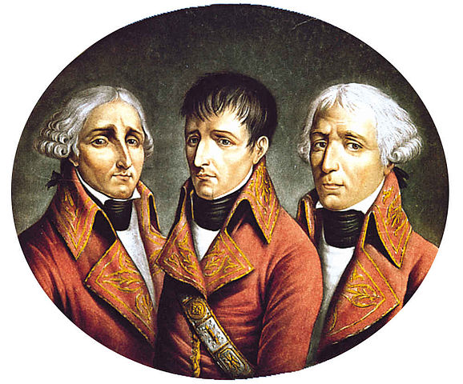Convention replaced with a new bicameral legislature, with executive power vested in five-member body known as the Directory. In practice, it governed as a dictatorship.
Although it lasted four years, the Directory was ineffective and unpopular. In 1799, General Napoléon Bonaparte launched the coup of 18 Brumaire, which unseated the Directory and replaced it with the three-member Consulate, with himself serving as First Consul. This event effectively ended the revolutionary era in France.
Napoléon
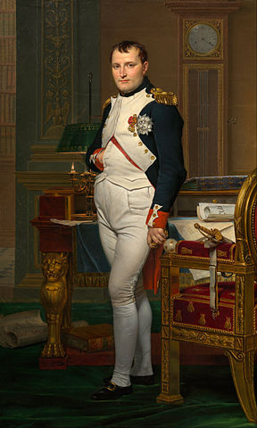Napoléon ruled as a dictator or uncrowned king. He had himself named consul-for-life in 1802, and in 1804, he dispensed with the uncrowned part and had himself proclaimed emperor.
For a time, he and his armies were wildly successful in controlling much of Europe, directly or indirectly. But eventually his enemies turned the tide and Napoléon was defeated and sent into exile in 1814 (although he staged a brief comeback the following year).
The Bourbon Restoration: 1815–48
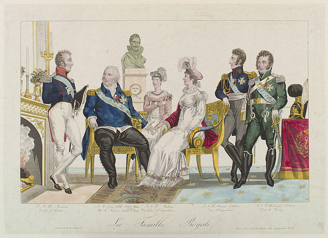- End of Napoléon's rule left a power vacuum in France.
- Some wanted to restore the ancien régime; others wanted a return to the ideals of the Revolution.
- Louis XVIII ruled as a constitutional monarch and was moderately popular, but his brother Charles X attempted to take a more active role on the throne when he became king in 1824.
- 1830: Relations with parliament break down; Charles was deposed in favor of Louis Philippe.
Louis-Napoléon
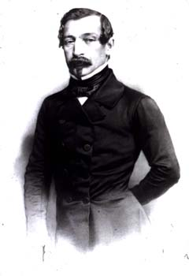Louis Philippe was deposed in 1848 and the Second Republic was declared.
Napoléon's nephew, Louis-Napoléon Bonaparte, was soon elected as president. He declared himself “Prince-President” and emulated the militarist trappings of his uncle.
The Second Empire
In 1851, after failing to have the constitution amended in a referendum to allow him to seek a second term of office, he and his supporters organized a “self-coup,” dissolving parliament. A referendum was organized to validate the coup, and the next year a second referendum established the Second Empire, with Louis-Napoléon now installed as Napoléon III.
Although Napoléon III initially ruled in a dictatorial manner, his regime became more liberal in the 1860s, and overall the Second Empire was a period of relative prosperity for France.
The End of the Empire
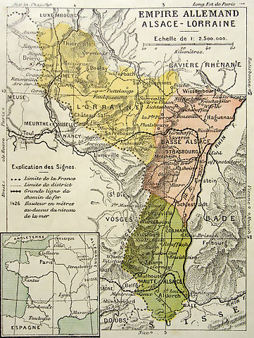However, unlike his uncle, Napoléon III had only limited battlefield prowess. The Prussian chancellor, Otto von Bismarck, drew France into his scheme to unify Germany under Prussian rule, resulting in the Franco-Prussian War.
The war proved a humiliating defeat for France and Napoléon III in particular, who was captured by the Germans.
The Third Republic
The German defeat left another power vacuum in France. A new national assembly was soon elected, but it came into conflict with Parisian radicals who formed the Paris Commune. The new parliamentary Third Republic, however, brought genuine mass democracy to France.
Internally the republic was divided politically. Some French sought the restoration of the monarchy, while others thought the republic insufficiently radical. Between 1870 and 1940, France averaged more than one prime minister per year.
Vichy France
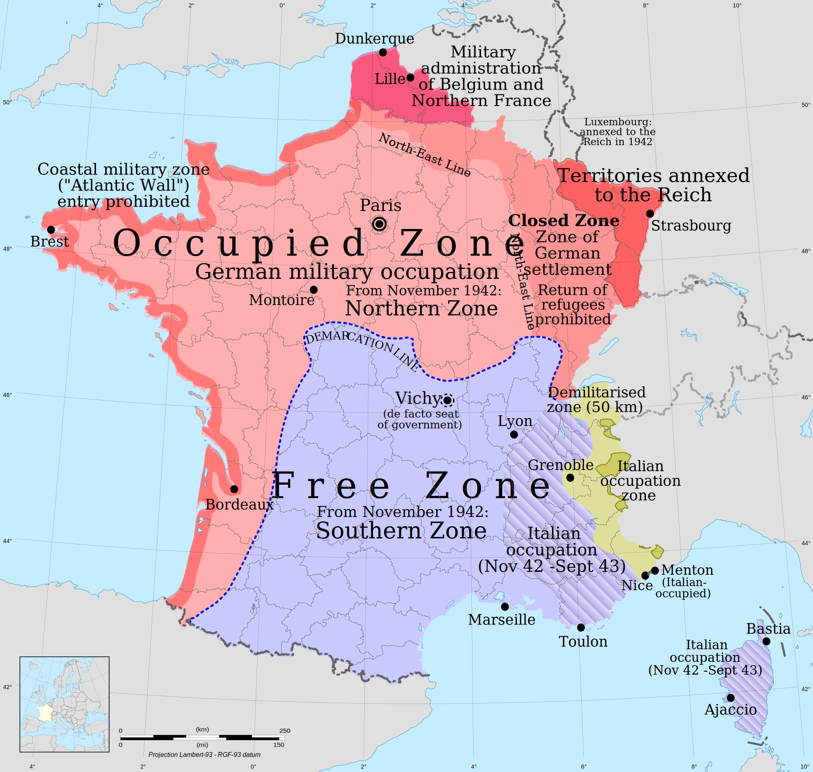After Germany's swift conquest of France, the collaborationist Vichy regime was established. Although the Vichy government was nominally in charge of most of France, the north and west were placed under German occupation.
The Occupation
Many French people supported the Vichy regime, either due to its anti-communist orientation or its relative stability.
Other French people joined the anti-German Résistance, while many of those who had successfully fled ahead of the German invasion joined the Free French forces in Britain under General Charles de Gaulle.
The Fourth Republic
When France was liberated by the Allies, a provisional government was established to prepare for a new post-war constitution, which established the Fourth Republic.
In many ways, the Fourth Republic was a continuation of the Third Republic. Although its constitution was designed to produce more stable governments, in practice it didn't.
The Algerian Crisis
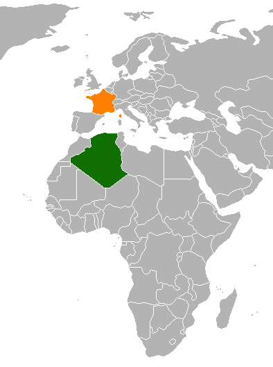The downfall of the Fourth Republic was the crisis in Algeria. The French colony in North Africa was divided between the native Algerians and French settlers (pieds-noirs).
To forestall any withdrawal from Algeria, the army staged a coup d'état against the government. They took over Algeria and Corsica and warned the government that Paris would be next if Charles de Gaulle was not installed as prime minister.
The Fifth Republic
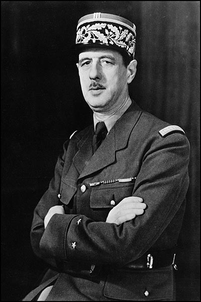
Charles de Gaulle returned from his retirement from politics and promptly consolidated power in his own hands. He and his allies drafted a new constitution strengthening the presidency at the expense of parliament.
At the same time, he did not want a system with as many checks and balances as the U.S.-style presidential system.
The new constitution established what is known as a semipresidential or premier-presidential system.
President of the Republic
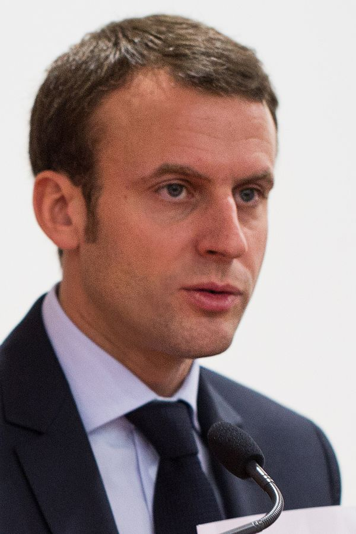Presidents are elected by the voters to five-year terms, using a majority-runoff system; if no candidate gets an absolute majority of the vote, the top two candidates face off in a second round two weeks after the election.
Currently, presidents cannot serve more than two consecutive terms.
The current president of France is Emmanuel Macron of the En Marche! (Forward!) political movement, who was elected in May 2017.
The Government
Under the French semipresidential system, the prime minister and cabinet are chosen by the president, not parliament.
However, the parliament can censure the government; if this happens, the president must appoint a new cabinet. This effectively means that the president must choose a cabinet that will command the support of a majority in parliament.
The current prime minister has been Édouard Philippe of the Republicans (LR), since May 2017.
Cohabitation
Cohabitation is term used when president is from a different party than that with a majority in parliament.
To avoid censure votes, president had to appoint prime ministers and cabinets preferred by the majority party. Prime ministers had more real power than the president in these circumstances.
In 2000, the constitution was amended to make presidential and parliamentary terms coincide and to hold their elections within a few weeks of each other, making cohabitation less likely in the future.
The National Assembly
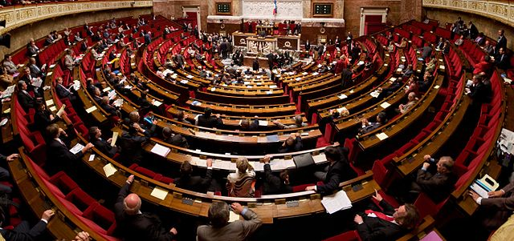The National Assembly (Assemblée nationale) is the lower house of the French parliament.
The 577 députés are elected from single-member districts, including seats for overseas territories and for French citizens living abroad.
Typically deputies serve a five-year term. The president can dismiss them and call early elections, but the 2000 reforms make this less likely.
The Assembly meets at the Palais Bourbon in Paris.
More on the Assembly
Assembly deputies, like presidents, are elected using a two-round system; if no candidate wins a majority in the first round, those candidates receiving at least 12.5% of the registered voters' votes proceed to a run-off, where whoever gets most votes prevails.
Like in Britain, it is unusual for a proposal from the cabinet to be turned down by the National Assembly. If necessary, the prime minister can tie any proposed law to a censure vote; if the law fails, the cabinet falls.
Unlike in the UK and Germany, deputies may not simultaneously serve as ministers in the government; instead, they must resign from the National Assembly and are replaced by an alternate from their party.
The Senate
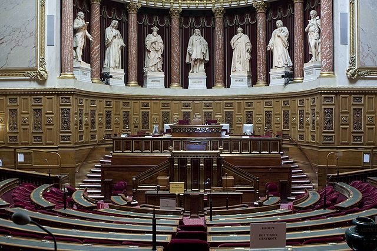The French Senate (Sénat) is relatively weak, much like the British House of Lords. Its members are elected indirectly by members of local and regional governments, along with the members of the National Assembly.
Since 2011, there have been 348 members elected to six-year terms; half of the members are chosen every three years.
Senators can delay or amend legislation, but cannot ultimately block it.
The Senate meets at the Luxembourg Palace in Paris.
The Constitutional Council
Another important body in France is the Constitutional Council (Conseil Constitutionnel). Unlike in the U.S. or Germany, it is not a court of law, but it does have limited power to decide the constitutionality of laws.
Normally it decides whether or not a law is constitutional before it goes into effect. However, since 2010 it has also had the power to review laws after they are adopted.
Nine members are appointed for nine-year terms to the council by the president, speaker of the Assembly, and speaker of the Senate. In addition, former presidents are entitled to serve on the council for life.
Semipresidentialism in One Diagram
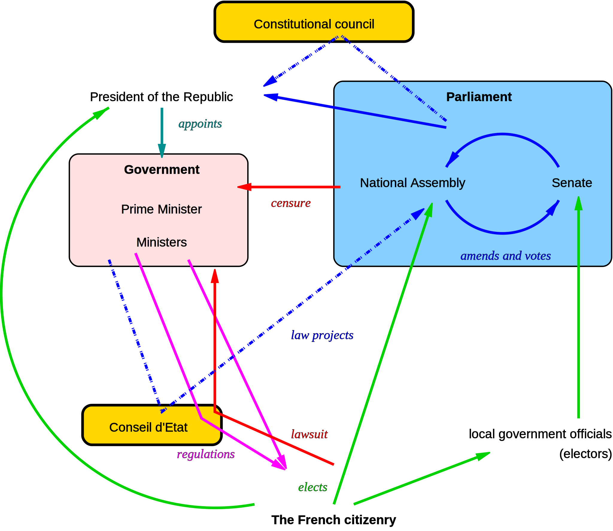Political Parties in France
France's party system is relatively unstable, particularly on the right:
-
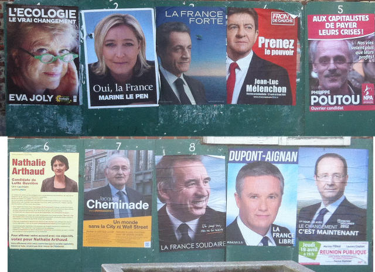
The Socialist Party (Parti socialiste; PS); mostly social democrats, but a bit more leftist than SDP, Labour.
The Republicans (Les Républicains); new name of the former Union for a Popular Movement (UMP); “neo-Gaullists”: conservative but not necessarily “free marketeers.”
Smaller Parties
The National Front (Front national; FN) is a right-wing populist and nationalist party; some accuse it of being fascist.
The Union of Democrats and Independents (Union des démocrates et indépendants; UDI), formed in 2012.
Europe Ecology – The Greens (Europe Écologie – Les Verts; EELV).
The Communists (Parti communiste français; PCF).
En Marche!, centrist party formed in 2016 by former socialist politician Emmanuel Macron, allied with the somewhat older MoDem (Democratic Movement) party.
Administrative Divisions
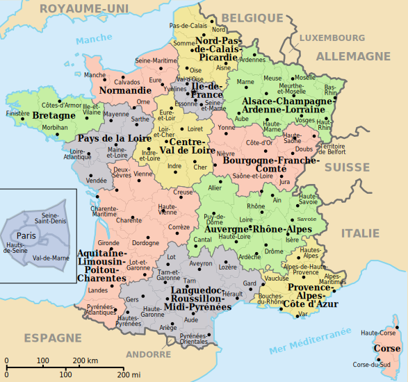France was first divided into départements during the revolutionary era in 1790, replacing the older provinces. They have been reorganized over the years.
Since 2016, metropolitan France (including Corsica) has 97 départements, grouped into 13 régions.
Beyond the Metropole
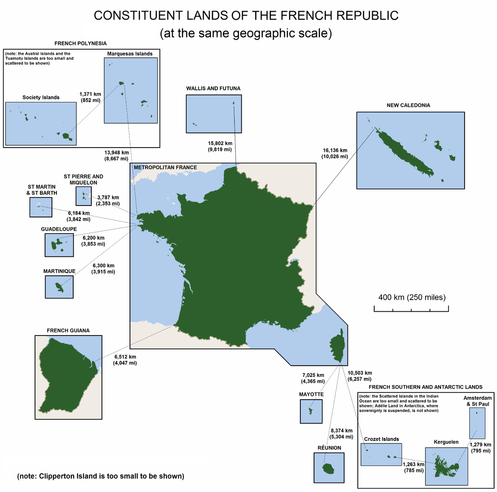Unlike in Britain and the United States, France's external departments and territories have the same representation as metropolitan France, and have an equal vote in national elections, including for the presidency and National Assembly.
Centralization of Power
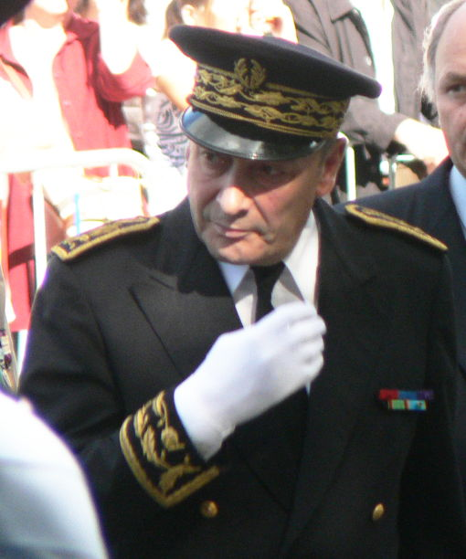Power in France is highly centralized. Although départements and their subdivisions have elected councils and mayors, the national government is represented by a prefect (préfet) who directs the local police and oversees the local elected officials.
Many other functions of government, like public education, are run by bureaucrats appointed by the central government with little or no local oversight.
French Cultural Divisions
The secular–clerical divide (laïcité): debate over the role of the Catholic Church; how strictly separated should church and state be?
Patriotism and distrust of government: the French have a strong sense of nationalism but are highly cynical about government officials.
Education is both egalitarian and elitist: there are more places in academic high schools (lycées générals) than in Germany's Gymnasien, and their graduates automatically qualify for university education—but the elite schools (grandes écoles) like ENA are highly selective.
Government by Bureaucracy
The centralized French state is also heavily bureaucratic, even by European standards.
In the post-war era, French bureaucrats steered industry—both nationalized and private—through a system known as dirigisme using indicative planning to try to direct investment in production based on expert judgment.
Most bureaucrats attended the grandes écoles, especially the École Nationale d'Administration (ENA) in Strasbourg.
Énarques often pass between electoral politics and the bureaucracy due to rules that encourage this “revolving door.”
The French Economy
Post-war dirigiste policies led to creation of “national champions,” both in the private and nationalized sectors.
Privatization was initiated in France under socialist government of François Mitterand in the 1980s. But not as complete as in the UK, since state investment is much deeper and free-market ideology is less popular.
French labor market has high costs and low flexibility, leading to high unemployment, particularly for youth.
France has a much bigger agricultural sector than most industrialized countries, affecting politics by strengthening the interests of rural France.
Immigration, Race, and Religion
France's colonial legacy, particularly in Algeria, means France has a lot of immigrants from Africa; many are Muslim and poorly integrated into French society.
A distinct Muslim identity is at odds with French republican ideal of laïcité (strict separation of religion and state).
Europe
- France is the biggest beneficiary of the Common Agricultural Policy, subsidizing French farmers (largely with German taxes). Historically France has been the E.U.'s biggest cheerleader—Jean Monnet, the “founding father” of the E.U., was French.
However, French voters sometimes worry about loss of France's sovereignty to European institutions and dislike the politicians and bureaucrats who run the E.U.

Copyright and License
The text and narration of these slides are an original, creative work, Copyright © 2015–17 Christopher N. Lawrence. You may freely use, modify, and redistribute this slideshow under the terms of the Creative Commons Attribution-Share Alike 4.0 International license. To view a copy of this license, visit http://creativecommons.org/licenses/by-sa/4.0/ or send a letter to Creative Commons, 444 Castro Street, Suite 900, Mountain View, California, 94041, USA.
Other elements of these slides are either in the public domain (either originally or due to lapse in copyright), are U.S. government works not subject to copyright, or were licensed under the Creative Commons Attribution-Share Alike license (or a less restrictive license, the Creative Commons Attribution license) by their original creator.
Works Consulted
The following sources were consulted or used in the production of one or more of these slideshows, in addition to various primary source materials generally cited in-place or otherwise obvious from context throughout; previous editions of these works may have also been used. Any errors or omissions remain the sole responsibility of the author.
- Michael G. Roskin. 2013. Countries and Concepts: Politics, Geography, Culture, 12th ed. Upper Saddle River, New Jersey: Pearson.
- Various Wikimedia projects, including the Wikimedia Commons, Wikipedia, and Wikisource.